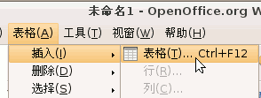
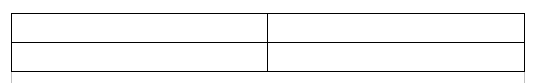
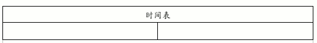
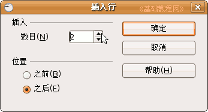
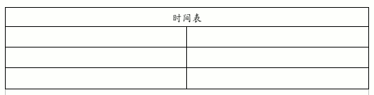
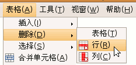
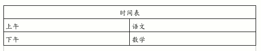

OpenOffice.org 教程之 Writer 文字处理
作者：TeliuTe 来源：基础教程网
七、插入表格 返回目录 下一课使用表格可以很方便地布置页面，表格里的每个小格叫单元格，里面可以放文字、图片等，下面我们来看一个练习；
1、插入表格
1）启动Writer，自动打开一个空白文档；
2）点菜单“表格－插入－表格”命令，出来一个对话框；

2）对于一个表格来说，横着的叫“行”，竖着的叫“列”，每个小格子叫“单元格”，
在出来的面板中，默认是2行、2列，直接点“确定”；

3）在第一个格子里点一下鼠标，然后，向右拖动选中第一行的两个格子；
4）点菜单“表格－合并单元格”命令，第一行就变成一个格子了，输入“时间表”并居中；

5）再在下面的格子里点一下鼠标左键，让光标到第二行，点菜单“表格－插入－行”命令，
在出来的对话框中，点向上微调按钮，把数目改成2行，点“确定”；

6）这时候表格就又增加了两行，一共是四行；

7）在最下面一行里点一下鼠标左键，让光标到这一行里头，然后点菜单“表格－删除－行”命令，把最最后一行删除了；

8）在第二行的两个格子里输入“上午、语文”，在第三行的两个格子里输入“下午、数学”

以“插入表格”为文件名，保存文件到自己的文件夹；
本节学习了插入表格的基本操作，如果你成功地完成了练习，请继续学习下一课内容；本教程由86团学校TeliuTe制作|著作权所有，不得用于商业用途
基础教程网：http://teliute.org
美丽的校园……
转载和引用本站内容，请保留版权信息和本站链接。